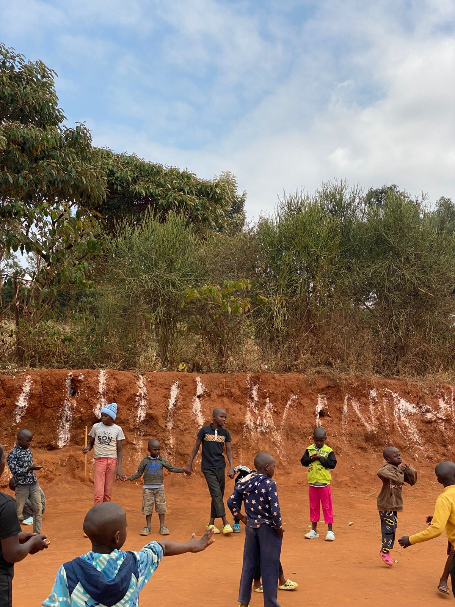
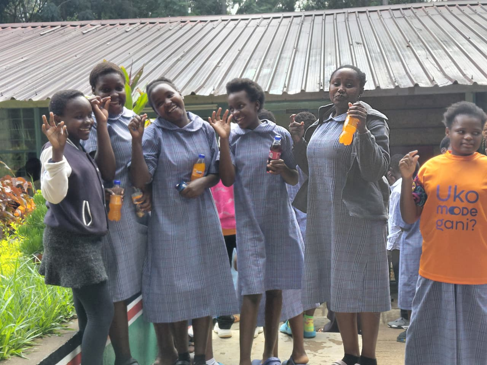

Our impact
Stories, updates and accountability.
This page is designed for verified stories, programme updates, photos and simple impact numbers.
0Families supportedUpdate after verified activity
0Active volunteersUpdate from volunteer records
0Projects completedUpdate after project reporting


Impact stories
Your first story goes here.
After each activity, add what happened, where it happened, who participated, what resources were used and what changed. Avoid publishing private information or identifiable images without appropriate consent.
Send an impact story